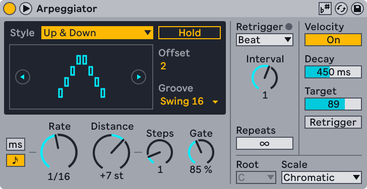
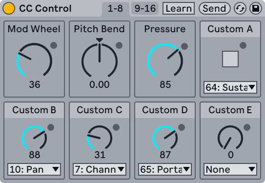
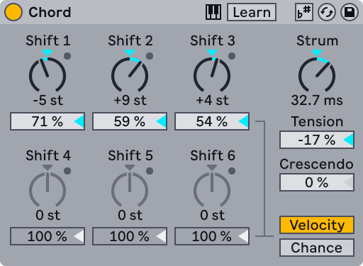
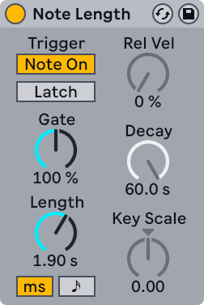
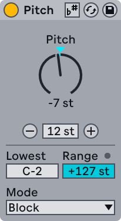
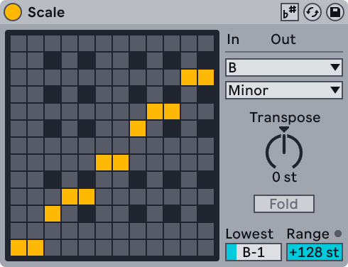
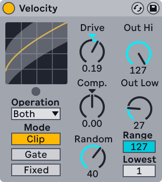

29. Live MIDI Effect Reference
Live comes with a selection of custom-designed, built-in MIDI effects. These effects can modify incoming MIDI pitch, length, and velocity data in various ways. You can use a MIDI effect on its own to add variation to a pattern or combine multiple MIDI effects to create more complex note sequences.
All MIDI effects with pitch controls support scale awareness. When the Use Current Scale toggle in the device title bar is enabled, any pitch-related controls can be adjusted in scale degrees instead of semitones. This ensures that all note transpositions stay within a specific harmonic range.
To learn the basics of using effects in Live, check out the Working with Instruments and Effects chapter.
29.1 Arpeggiator

Arpeggiator creates rhythmical patterns using the notes of a chord or a single note. It offers a complete set of both standard and unique arpeggiator features.
Arpeggiators are a classic element in 80s synth music. The name originates from the musical concept of the arpeggio, in which the notes comprising a chord are played as a series rather than in unison. “Arpeggio” is derived from the Italian word “arpeggiare,” which refers to playing notes on a harp.
The Style chooser determines the sequence of notes in the rhythmical pattern. When a style is selected, a visualization of the pattern is shown in the display. You can use the Previous Style Pattern and Next Style Pattern buttons in the display to cycle through patterns.
Most style patterns are common to standard arpeggiators, such as Up, Down, Converge, and Diverge. There are also a couple of unique patterns:
- Play Order arranges notes in the pattern according to the order in which they are played. This pattern is therefore only recognizable when more than one chord or note has been played.
- Chord Trigger repeats the incoming notes as a block chord.
Additionally, there are three patterns for random arpeggios:
- Random generates a continuously randomized sequence of incoming MIDI notes.
- Random Other generates random patterns from incoming MIDI notes, but will not repeat a given note until all other incoming notes have been used.
- Random Once generates one random pattern from incoming MIDI notes and repeats that pattern until the incoming MIDI changes, at which point a new pattern is created.
The arpeggiated pattern plays at the speed set by the Rate control, which uses either milliseconds or tempo-synced beat divisions, depending on which Sync/Free Rate toggle is selected.
You can transpose the pattern using the Distance and Steps controls. The Distance control sets the transposition in semitones or scale degrees, while the Steps control determines how many times the pattern is transposed. The pattern initially plays at its original pitch and then repeats at progressively higher transpositions when using positive Distance values or lower transpositions when using negative values. For example, when Distance is set to +12 st and Steps is set to 2, a pattern starting with C3 will play first at C3, then C4, and finally at C5.
To transpose the pattern within a specified scale, use the Root and Scale choosers to select your desired settings. You can also transpose the pattern based on the clip’s scale by enabling the Use Current Scale toggle in the device title bar. When this option is enabled, the Root and Scale choosers are deactivated as these settings are determined by the clip.
The Gate control determines the length of the notes in the pattern as a percentage of the Rate value. Gate values above 100% result in notes that overlap, creating a legato effect.
When playing notes using a MIDI controller, you can enable the Hold switch to keep the pattern playing even after releasing the keys. The pattern will continue to repeat until another key is pressed. You can hold an initial set of keys and then press additional keys to add notes to a currently held pattern. To remove notes, play them a second time. This allows you to create a gradual buildup and rearrangement of the pattern over time.
The Pattern Offset control shifts the sequence of notes in the pattern by a specified number of steps. Imagine the pattern as a circle of notes that is played in a clockwise direction from a set start point — Pattern Offset effectively rotates this circle counterclockwise one note at a time, shifting the starting note. For example, if the offset is set to 1, the second note in the pattern plays first and the original first note plays last.
You can add swing to the pattern by selecting a groove from the Groove chooser. Grooves in Arpeggiator function similarly to grooves in clips. The intensity of the groove is determined by the Global Groove Amount slider in the Groove Pool or the Control Bar.
The pattern can be restarted at specific intervals depending on the selected Retrigger option:
- Off — The pattern is never retriggered.
- Note — The pattern is retriggered when a new note is played.
- Beat — The pattern is retriggered on a specified bar or beat, as set by the Interval control.
The LED next to the Retrigger controls flashes each time the pattern is retriggered.
The Repeats control specifies how many times the pattern is repeated. By default, Repeats is set to ∞ so that the pattern plays indefinitely. Setting Repeats to 1 or 2 can emulate the strumming of a guitar, for example. You can also combine different Repeats values with various Retrigger settings to create rhythmically generated arpeggios with pauses in between.
You can enable the Velocity toggle to access the velocity controls for the pattern. Decay sets the time required to reach the velocity value specified by the Target control. For example, using a long Decay time and setting Target to 0 produces a gradual fade-out.
When the Retrigger switch is enabled, the velocity slope is retriggered each time the pattern is retriggered. Combining velocity and Beat retriggering adds rhythmic variation to the pattern’s velocity slope.
29.2 CC Control

CC Control lets you send MIDI CC messages to hardware devices. It features three fixed control knobs (Mod Wheel, Pitch Bend, Pressure), one customizable button for sending on/off or minimum/maximum values (Custom A), and twelve customizable control dials (Custom B - M).
The device’s fixed control knobs function as follows:
Mod Wheel – Sets the amount of modulation being applied by the receiving device.
Pitch Bend – Sends out pitch bend data to the receiving device. Negative values adjust the range downward and positive values adjust the range upward.
Pressure – Sets the amount of channel pressure/aftertouch being applied by the receiving device.
The Custom A button sends out on/off or minimum/maximum values, which can be toggled between by turning the button on or off. While intended for sending sustain/hold pedal messages (CC 64), this button can be assigned to any other MIDI parameter via its CC Type Chooser drop-down menu.
The Custom B - M controls can be renamed and assigned to any MIDI parameter via each control’s CC Type Chooser drop-down menu. Custom names and assignments for these controls are shown on Push and are saveable as presets, allowing for easy navigation and reuse. Parameter values can be set using automation lanes or modulated in real time via the device’s control dials, which can be useful both for structuring and improvising with performances.
In the device’s title bar, there are two toggles for switching between controls 1 - 8 and controls 9 - 16, as well as a Send button that sends out all current MIDI CC values when clicked. Enabling the Learn toggle allows you to send CC data from an incoming MIDI source to any customizable control. This provides a quick way of personalizing the device. Using Learn also makes it easy to identify which CC message an external controller is sending.
Note that if CC automation already exists for any CC message being sent from CC Control to a receiving device, MIDI data between the two is merged.
29.3 Chord

As the name suggests, this effect creates a chord using the pitch of each incoming note along with up to six additional pitches.
You can use the Shift 1-6 controls to assign which pitches are used to contribute to a chord from a range of ±36 semitones relative to the original note. For example, setting Shift 1 to +4 semitones and Shift 2 to +7 semitones yields a major chord in which the incoming note is the root. Pitches can be set in any order — it makes no difference which Shift control is used for which pitch. The LED next to each Shift knob flashes to indicate when its corresponding note is being played.
Note that the same pitch cannot be assigned to multiple Shift controls. For example, you cannot set both Shift 2 and Shift 3 to +8 st. If a pitch is already assigned to a Shift control, any additional assignments of the same pitch will be deactivated.
In addition to setting pitches manually, you can enable the Learn toggle in the device title bar to assign pitches by playing a chord on an external MIDI controller. To do so, hold the keys you want to include in the chord. The pitch of the first held key determines the root and is not assigned to a Shift control; any subsequent pitches are assigned to the Shift controls in order. You can add more pitches by holding new keys while keeping the original keys held. Once the desired pitches are assigned, deactivate the Learn toggle.
When the Velocity or Chance toggle is enabled, you can adjust the dynamics of the generated note using the slider underneath each Shift control:
- Velocity sets the velocity for a generated note. This is a relative control, with a range of 1% to 200%. At 100%, the velocity of the generated note matches the velocity of the incoming note. Varying the velocities between notes can introduce subtle overtones or dramatically alter a chord’s balance.
- Chance sets the probability that a generated note will play when an incoming note is triggered. You can set the probability anywhere from 0% to 100%. At 100%, a note is generated for every incoming note.
Using both Velocity and Chance together is a good way to add dynamic variations to a generated chord.
You can use the Strum control to add a delay of up to 400 ms between the notes of a generated chord. At positive values, the strumming starts with the original note, followed by the notes from Shift 1 to Shift 6. At negative values, this order is reversed. You can add duplicate notes by enabling the Play Duplicate Notes When Strumming option in the device title bar’s context menu.
There are two additional controls that can be used to further shape the strumming:
- Tension adjusts the speed of the strumming. At positive values, the strumming starts slowly and accelerates with each additional note, while at negative values, it starts quickly and gradually slows down.
- Crescendo applies a velocity ramp to the strummed notes. Positive values create an upward ramp, and negative values create a downward ramp.
By default, pitches are set in semitones; however, you can enable the Use Current Scale toggle in the device title bar to set pitches in scale degrees.
You can enable the Send Per Note Events to Generated Notes option in the device title bar’s context menu to send out MPE data to the notes in a generated chord. When scale awareness is also enabled, per-note pitch bend messages follow the clip’s scale so that bent chords stay within the expected harmonic range.
29.4 Note Length

Note Length alters the length of incoming MIDI notes. It can also be used to trigger notes from MIDI Note Off messages, instead of the usual Note On messages.
The Trigger Source toggle determines whether the device is triggered by Note On or Note Off messages. When set to Note On, the length of incoming notes is determined by the Gate and Length controls. The Gate control defines how the value set by the Length control is applied. At 100%, notes play for the total duration specified by the Length control. Setting Gate to 200% doubles the length, while setting it to 50% halves the length. You can use the Time Mode toggles to adjust the length in milliseconds or tempo-synced beat divisions.
When the device is set to trigger from a Note Off event (the moment a note is released), the timing of an incoming note is delayed by its length — meaning the note starts at the moment it would have stopped if triggered by a Note On message. Once the initial delay is reached, the timing specified by the Gate and Length controls is applied.
Three additional parameters are available when using Note Off messages:
- Release Velocity — Determines the velocity of the output note. The percentage sets the balance between the incoming note’s Note On and Note Off velocities. If your keyboard does not support MIDI Note Off velocity, you can leave this set to 0%.
- Decay Time — Sets the time needed for an incoming note’s velocity to decay to zero. The decay begins immediately from the moment the device receives a Note On message. The value at the time of Note Off becomes the velocity of the output note.
- Key Scale — Alters the length of output notes based on the pitch of incoming notes. At positive values, notes below C3 are made progressively longer, while notes above C3 are made shorter. Negative values invert this behavior.
You can enable the Latch toggle to activate note latching. When using Note On messages, triggered notes continue playing until the next Note On message is received. When using Note Off messages, notes are triggered once all keys (or a sustain pedal, if connected) are released and a new Note Off message is received. In both cases, the Gate and Length controls are deactivated, as the length of triggered notes depends on the Note On/Off messages. Additionally, the Release Velocity, Decay Time, and Key Scale controls are deactivated for Note Off messages.
29.5 Pitch

Pitch transposes incoming MIDI notes by ±128 semitones or ±30 scale degrees.
You can use the Pitch control to set the transposition for incoming pitches. By default, notes are transposed in semitones. Enable the Use Current Scale toggle in the device’s title bar to transpose notes by scale degrees.
The Step Up and Step Down buttons let you increase or decrease the Pitch control value by the distance set by the Step Width slider. The Step Width distance can range from 1 to 48 semitones or 1 to 30 scale degrees when Use Current Scale is enabled. All of these controls can be assigned Key and/or MIDI mappings for real-time adjustment.
The Lowest and Range controls define the pitch range through which notes are allowed to pass through the effect.
You can select an option in the Mode chooser to determine how notes outside the set range are processed:
- In Block mode, notes outside the range are blocked from passing through. The LED next to the Range control flashes when this happens.
- In Fold mode, notes outside the range are transposed to fit within the range.
- In Limit mode, notes are restricted to the range. This means that any notes below the lowest note in the range are transposed up to that note, and any notes above the highest note in the range are transposed down to fit.
29.6 Random

Random adds an element of unpredictability to note sequences by randomizing the pitch of incoming notes.
The Chance control determines how likely it is that an incoming note’s pitch will be randomly altered. You can think of it as a dry/wet control for randomness.
The random value that determines the pitch change is created by two variables: the Choices and Interval controls. The Choices control defines the number of possible pitches, ranging from 1 to 24. The Interval control defines the number of possible intervals between the pitches. The values of these two controls are multiplied to determine the total range of possible pitches relative to the incoming note.
For example, when Chance is set to 50%, Choices is set to 1, and Interval is set to 12, repeatedly playing C3 results in half of the notes playing at C3 and half at C4, in no particular order. If you swap the Choices and Interval values by setting Choices to 12 and Interval to 1, half of the notes will play at C3, while the other half will play at any note between C#3 and C4. These examples assume that Mode is set to Random and Sign is set to Add, which are the default settings.
Mode determines how the randomization occurs: Random assigns pitches in no particular order, while Alt cycles through pitches in a fixed round-robin order. The Chance control behaves differently in this mode: at 100%, the next output note will always be the next note in the sequence, while at 0%, the next output note will always be the incoming note.
For example, when Chance is set to 100%, Choices is set to 12, and Interval is set to 1, playing C3 once plays C3, and each successive C3 plays the next semitone higher until C4, at which point the cycle starts over from C3. When Chance is set to 100% and Choices and Interval are set to 2, incoming C3s alternate between C3 and D3. This behavior is ideal for simulating upbow and downbow alternation with stringed instruments, or alternating right- and left-hand drum samples.
Sign determines how random pitches are generated relative to the incoming note:
- Add generates random pitches that are higher than the original note.
- Sub generates random pitches that are lower than the original note.
- Bi generates random pitches that can be both higher and lower than the original note.
The LEDs to the right of the Chance control indicate how random pitches are assigned:
- The + LED flashes when a pitch above the original note is generated.
- The 0 LED flashes when the pitch remains unchanged.
- The - LED flashes when a pitch below the original note is generated.
You can enable the Use Current Scale toggle in the device title bar to constrain randomly generated pitches to the clip’s scale. This ensures that the output values stay within a specific harmonic range. When using Random’s Alt mode with a defined scale, you can create the effect of a simple yet unpredictable step sequencer.
29.7 Scale

Scale remaps notes based on a defined scale. Each incoming note is assigned an outgoing equivalent in a matrix. This means you can convert all incoming Cs to Ds, for example.
The Note Matrix uses a 13x13 grid where each row and column corresponds to the 12 notes in a full octave. The columns represent incoming note values, while the rows show their outgoing equivalents.
The black squares correspond to the black keys on a keyboard. The highlighted squares determine how each note is mapped based on the set scale. The scale mapping begins from the root note, located in the bottom left corner of the Note Matrix. You can set the root note using the Base chooser and select a scale using the Scale Name chooser. Alternatively, you can enable the Use Current Scale toggle in the device title bar to apply the clip’s root note and scale. Once enabled, the Base and Scale Name choosers are deactivated, as the clip defines these settings.
You can create your own scale by selecting User from the Scale Name chooser. By default, each highlighted square is mapped to its corresponding note within an octave — C outputs C, C# outputs C#, and so on. You can move highlighted squares with the mouse or delete them with mouse clicks to customize which notes are included in the scale. Removing a note from the Note Matrix means that note will no longer be output, even if played.
Use the Transpose slider to raise or lower the pitch of incoming MIDI notes by ±36 semitones. You could, for example, shift a melody written in C major to G major by setting Transpose to +7 st.
When the Scale Name is set to User, you can enable the Fold switch to automatically fold notes if their distance from the original note is greater than six semitones. For example, if an incoming C3 is mapped to an outgoing A3, enabling Fold means that C3 will map to A2 instead.
The Lowest and Range controls define the note range for the scale mapping. By default, all octaves are included, but you can limit the range to creatively remap some notes while leaving the rest unaffected. For example, if Lowest is set to C2 and Range is set to +36, only the notes C2 through B4 will be remapped when using a C major scale. These controls can be used in conjunction with the Transpose parameter to apply transposition only to a specific range of notes. You can, using the same settings from the example, set the Transpose control to +7 st so that only the notes between C2 and B4 are transposed, while the others remain unaffected.
29.8 Velocity

Velocity alters the velocity values (1-127) of incoming MIDI notes to ensure their outgoing values stay within a specified range.
The Velocity Curve grid shows how the incoming velocities that fall within the range set by the Range and Lowest controls (X-axis) are remapped based on the range set by the Out Hi and Out Low controls (Y-axis). The resulting curve defines how the velocity values are altered.
You can, for example, set Out Low to 80 and Out High to 127 to constrain all outgoing velocities to a higher range, even if the original notes were played softly. Note that if Lowest and Out Low are set to zero, and Range and Out Hi are set to 127, the effect is essentially bypassed, as all incoming velocity values will output within a similar range.
Velocity values can be remapped for MIDI Note On (Velocity) or Note Off (Rel. Vel.) messages, or both, depending on the option set via the Operation chooser.
You can choose how incoming velocities that are outside the range set with the Range and Lowest controls are processed using one of the Mode toggles:
- In Clip mode, incoming velocities are clipped so that they stay within the range.
- In Gate mode, incoming velocities outside the range are removed altogether. When a note is blocked by the gate, the LED below the Velocity Curve grid flashes.
- In Fixed mode, the Out Hi value defines all outgoing velocity values, regardless of the incoming velocities.
Random introduces random modulation to all incoming velocities. The range of modulation is determined by the set value and is influenced by the Output Range controls. For example, when Out Hi is set to 127 and Out Low is set to 60, a Random value of 50 shifts the velocities up or down by up to 50 within the range of 60-127.
When using positive Random values, a gray-shaded area appears around the velocity curve to indicate that the velocities are subject to the set random range.
The Drive and Compand controls can be used to create a more complex velocity curve. Drive pushes all values in the curve to the outer extremes; Compand can either expand or compress the values within the boundaries of the curve.
Positive Drive values shift the velocities to the upper part of the range so that most notes play loudly, while negative values shift the velocities to the lower part of the range so that most notes play softly.
Positive Compand values expand incoming velocities to the outer boundary of the curve, shifting the outgoing values toward the higher or lower extremes. Negative Compand values compress outgoing velocities toward the mid-range.
You can use these two controls separately or together to further sculpt the velocity curve, creating a more defined result within the general range.